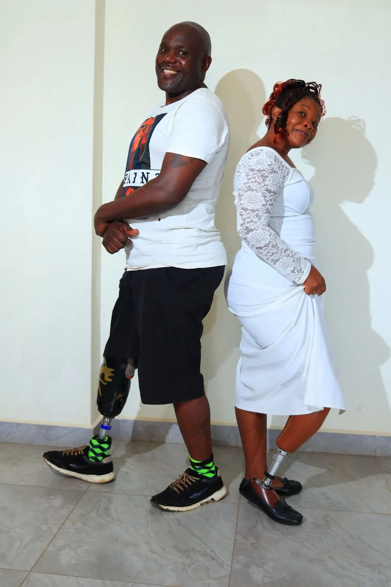
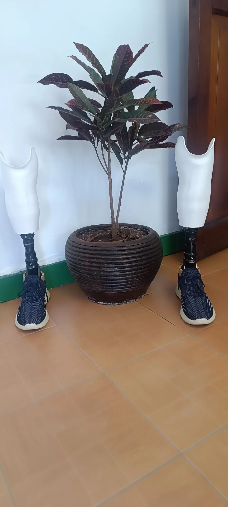
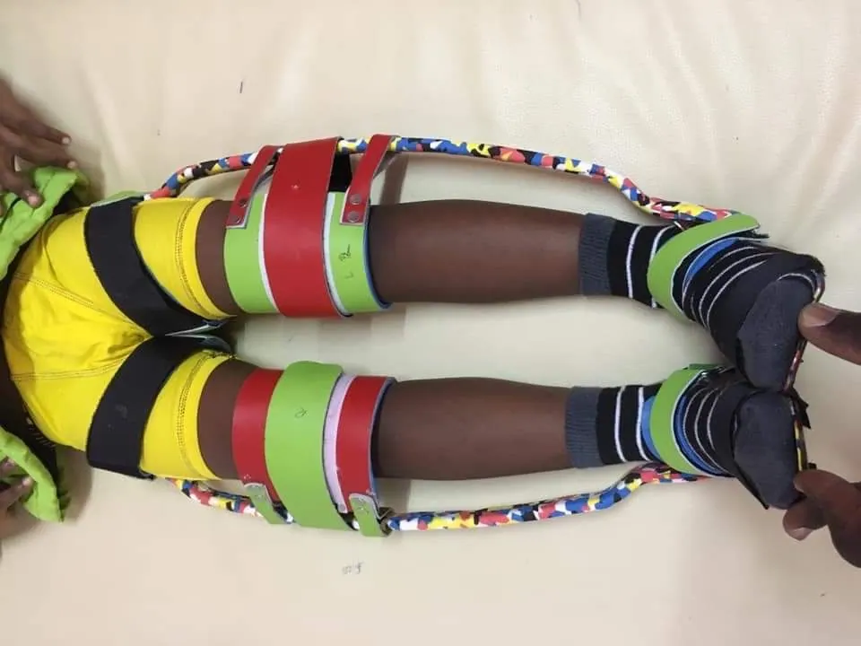
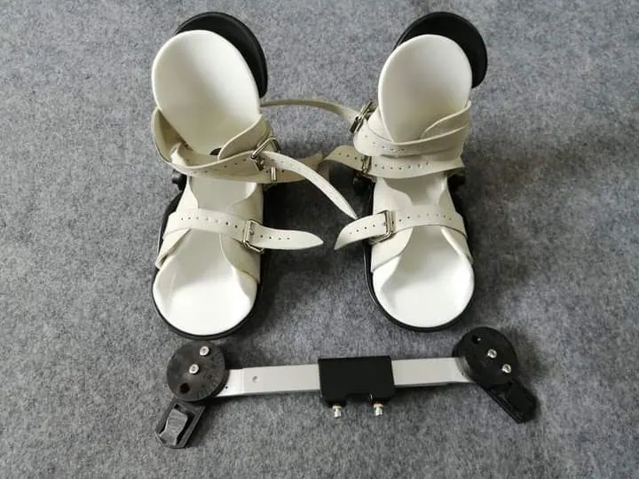
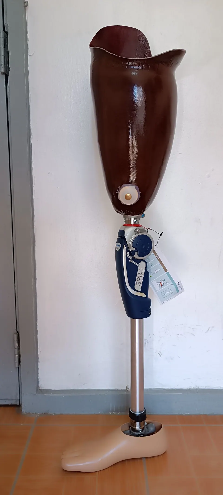
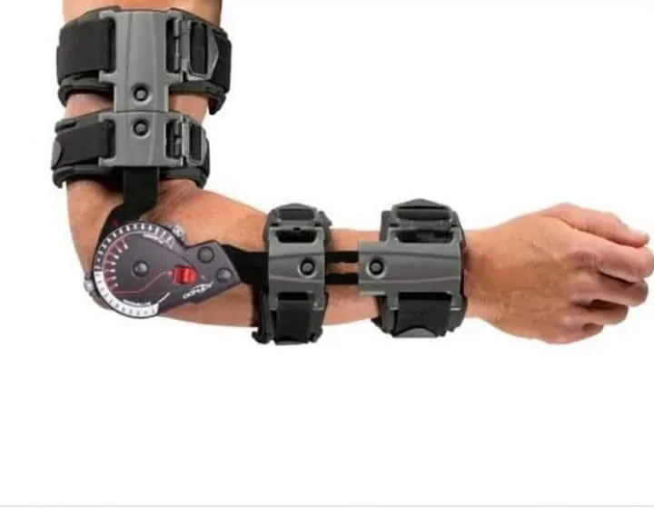
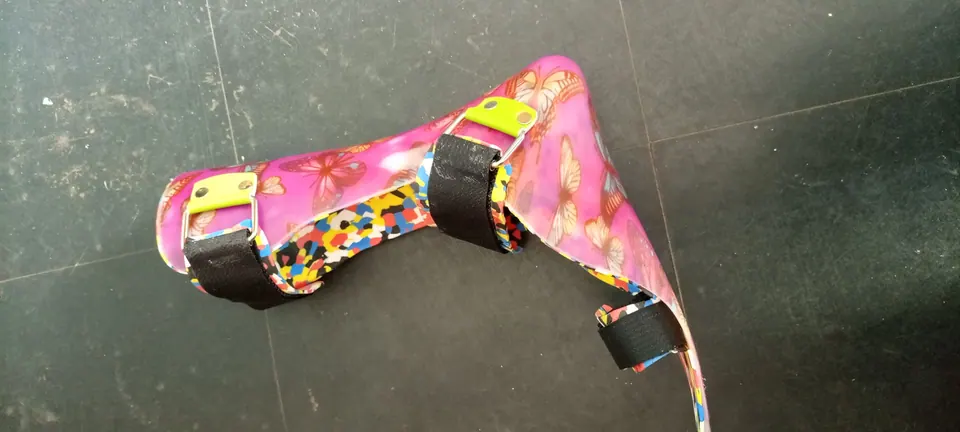
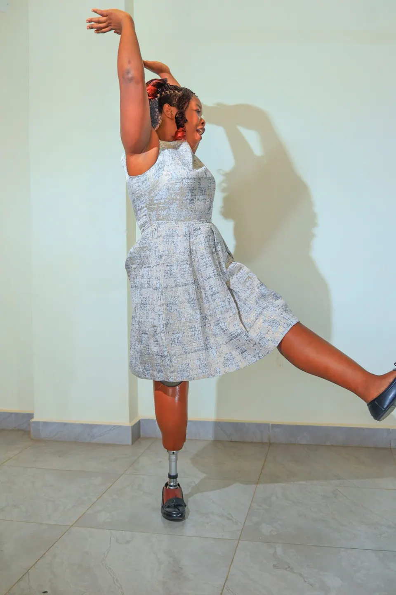

Prosthetics & orthotics clinic · Nairobi, Kenya
Prosthetics and orthotics in Nairobi, made to move with you.
Your trusted partner in custom prosthetic and orthotic care for children and adults, using carbon fibre lamination and 3D technology for a precise, comfortable fit.

Welcome to our clinic
Specialised orthopaedic care, shaped around your needs
From routine prosthetist and orthotist visits to the most advanced procedures, we're here for you.
Our professionals specialise in orthopaedic technology. They handle the assessment, diagnosis, prescription and treatment of acquired and congenital deformities and amputations in both children and adults, using current lamination and 3D prosthetic and orthotic technology.
What we do
Choose our services
Custom devices and specialised care to help you regain mobility and improve your quality of life.

Prosthetics
Custom prosthetics, myoelectric prosthetics and post-operative support.
Learn more
Orthotics
Lower limb, upper limb and spinal orthotics, made to fit.
Learn more
Other services
Diabetes footcare, clubfoot management, crutches and orthopaedic supplies.
Learn moreWhy Prolife
Why our patients choose us
Personalised orthopaedic solutions for every patient.
Meet the team
Custom prosthetics
Get back on your feet with personalised prosthetic solutions for a confident, active lifestyle.

Fast recovery
Advanced orthopaedic braces designed for comfort and healing.

Best orthopaedic care
Gentle, specialised orthotics to support your child's growth.

“My 3-year journey with Pro-Life has been life-changing. Their care and high-quality prosthetics restored my mobility and confidence.”Nancy OwuorRight below-knee amputee patient
Book a visit
Make an appointment
Tell us what you need and when you would like to come in. Our team will contact you to confirm.
- Kenafric Business Park, Tower A, 2nd FloorOff Baba Dogo Rd, Nairobi, with ample parking.
Get directions - Opening hours
Monday to Friday 8:00 AM – 6:00 PM Sunday 9:00 AM – 3:00 PM Saturday & public holidays Closed